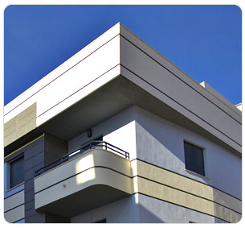

¿Qué hace Nazasur?
Grupo Nazasur tiene como prioridad en la construcción de sus viviendas, la máxima adaptación a las necesidades y demandas de los clientes.
Respetando en todo momento la relación calidad-precio, ofrece múltiples alternativas en la elección de su vivienda, facilitando de este modo, un amplio abanico caracterizado por su asequibilidad.
Su dilatada experiencia en proyectos residenciales al alcance de todos los sectores del mercado, ha creado una fidelidad a la marca, que ha desembocado en la promoción de múltiples residenciales de pisos y viviendas unifamiliares, en el área metropolitana de la provincia de Granada.
